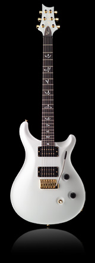

PRS Guitars proudly introduces the Dave Navarro Model. Dave has been playing PRS guitars since 1987. Over these last 17 years he has used our guitars while recording with Janes Addiction, The Red Hot Chili Peppers and solo projects. The Dave Navarro Model, an exact duplicate of what Dave plays, is a Custom 24 with mother of pearl bird inlays, gold hardware, wide-thin neck, HFS and Vintage Bass pickups and a Navarro Model truss rod cover. Available in Jet White.